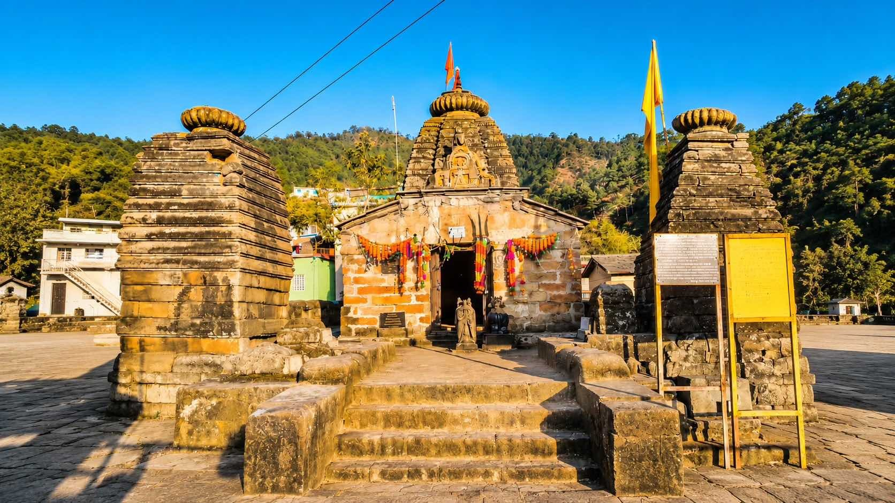

Every Saturday · Weekly
Rahu Paithani
Rahu Paithani, Uttarakhand
₹51 first seva
Then ₹121 per seva · weekly
Neel Vastra and Til Daan Seva
Blue cloth and sesame offerings at Rahu Paithani each Saturday.

Identity and source reference
- Product ID
- 29830113aae14686b8dcafaeada6cac7
- Package ID
- 7304a6bf3828478790db2d1409c8e33b
- Live page title
- Rahu Dosh Shanti & Samriddhi - Shanivar Special Rahu Paithani Uttarakhand Weekly Daan Seva